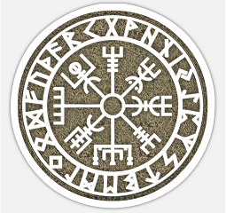

Come with us in a back journey to Scandinavia and experience the Viking Age!
While Vikings engaged in invading and pillaging, their societies were complex and multifaceted and influential.
They were skilled craftspeople, successful merchants, and diligent farmers with significant impact across western Europe and beyond.
And one of the most fascinating and revealing facets of their culture is Norse Mythology, remaining nowadays as a source of knowledge about Vikings beliefs and attitude in life and death.
GALLERY
Odin, the Allfather
Yggdrasil
Valkyries
Ragnarok

Página creada por: Francisco Javier Sicilia Pérez
Exámen de Lenguaje de Marcas - Enero 2021